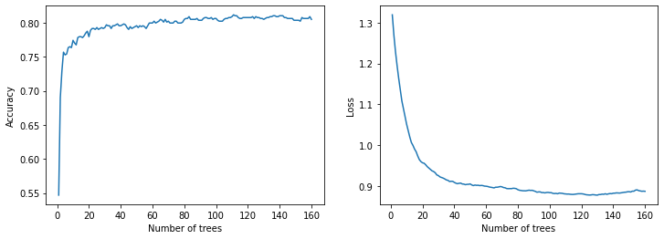
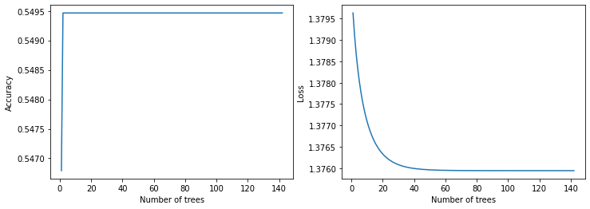

Text classification using Decision Forests and pretrained embeddings
Author: Gitesh Chawda
Date created: 09/05/2022
Last modified: 09/05/2022
Description: Using Tensorflow Decision Forests for text classification.

Introduction
TensorFlow Decision Forests (TF-DF) is a collection of state-of-the-art algorithms for Decision Forest models that are compatible with Keras APIs. The module includes Random Forests, Gradient Boosted Trees, and CART, and can be used for regression, classification, and ranking tasks.
In this example we will use Gradient Boosted Trees with pretrained embeddings to classify disaster-related tweets.
See also:
Install Tensorflow Decision Forest using following command :
pip install tensorflow_decision_forests
Imports
import pandas as pd
import numpy as np
import tensorflow as tf
from tensorflow import keras
import tensorflow_hub as hub
from tensorflow.keras import layers
import tensorflow_decision_forests as tfdf
import matplotlib.pyplot as plt
Get the data
The Dataset is available on Kaggle
Dataset description:
Files:
- train.csv: the training set
Columns:
- id: a unique identifier for each tweet
- text: the text of the tweet
- location: the location the tweet was sent from (may be blank)
- keyword: a particular keyword from the tweet (may be blank)
- target: in train.csv only, this denotes whether a tweet is about a real disaster (1) or not (0)
# Turn .csv files into pandas DataFrame's
df = pd.read_csv(
"https://raw.githubusercontent.com/IMvision12/Tweets-Classification-NLP/main/train.csv"
)
print(df.head())
id keyword location text \
0 1 NaN NaN Our Deeds are the Reason of this #earthquake M...
1 4 NaN NaN Forest fire near La Ronge Sask. Canada
2 5 NaN NaN All residents asked to 'shelter in place' are ...
3 6 NaN NaN 13,000 people receive #wildfires evacuation or...
4 7 NaN NaN Just got sent this photo from Ruby #Alaska as ...
target
0 1
1 1
2 1
3 1
4 1
The dataset includes 7613 samples with 5 columns:
print(f"Training dataset shape: {df.shape}")
Training dataset shape: (7613, 5)
Shuffling and dropping unnecessary columns:
df_shuffled = df.sample(frac=1, random_state=42)
# Dropping id, keyword and location columns as these columns consists of mostly nan values
# we will be using only text and target columns
df_shuffled.drop(["id", "keyword", "location"], axis=1, inplace=True)
df_shuffled.reset_index(inplace=True, drop=True)
print(df_shuffled.head())
text target
0 So you have a new weapon that can cause un-ima... 1
1 The f$&@ing things I do for #GISHWHES Just... 0
2 DT @georgegalloway: RT @Galloway4Mayor: ÛÏThe... 1
3 Aftershock back to school kick off was great. ... 0
4 in response to trauma Children of Addicts deve... 0
Printing information about the shuffled dataframe:
print(df_shuffled.info())
<class 'pandas.core.frame.DataFrame'>
RangeIndex: 7613 entries, 0 to 7612
Data columns (total 2 columns):
# Column Non-Null Count Dtype
--- ------ -------------- -----
0 text 7613 non-null object
1 target 7613 non-null int64
dtypes: int64(1), object(1)
memory usage: 119.1+ KB
None
Total number of "disaster" and "non-disaster" tweets:
print(
"Total Number of disaster and non-disaster tweets: "
f"{df_shuffled.target.value_counts()}"
)
Total Number of disaster and non-disaster tweets: 0 4342
1 3271
Name: target, dtype: int64
Let's preview a few samples:
for index, example in df_shuffled[:5].iterrows():
print(f"Example #{index}")
print(f"\tTarget : {example['target']}")
print(f"\tText : {example['text']}")
Example #0
Target : 1
Text : So you have a new weapon that can cause un-imaginable destruction.
Example #1
Target : 0
Text : The f$&@ing things I do for #GISHWHES Just got soaked in a deluge going for pads and tampons. Thx @mishacollins @/@
Example #2
Target : 1
Text : DT @georgegalloway: RT @Galloway4Mayor: ÛÏThe CoL police can catch a pickpocket in Liverpool Stree... http://t.co/vXIn1gOq4Q
Example #3
Target : 0
Text : Aftershock back to school kick off was great. I want to thank everyone for making it possible. What a great night.
Example #4
Target : 0
Text : in response to trauma Children of Addicts develop a defensive self - one that decreases vulnerability. (3
Splitting dataset into training and test sets:
test_df = df_shuffled.sample(frac=0.1, random_state=42)
train_df = df_shuffled.drop(test_df.index)
print(f"Using {len(train_df)} samples for training and {len(test_df)} for validation")
Using 6852 samples for training and 761 for validation
Total number of "disaster" and "non-disaster" tweets in the training data:
print(train_df["target"].value_counts())
0 3929
1 2923
Name: target, dtype: int64
Total number of "disaster" and "non-disaster" tweets in the test data:
print(test_df["target"].value_counts())
0 413
1 348
Name: target, dtype: int64
Convert data to a tf.data.Dataset
def create_dataset(dataframe):
dataset = tf.data.Dataset.from_tensor_slices(
(dataframe["text"].to_numpy(), dataframe["target"].to_numpy())
)
dataset = dataset.batch(100)
dataset = dataset.prefetch(tf.data.AUTOTUNE)
return dataset
train_ds = create_dataset(train_df)
test_ds = create_dataset(test_df)
Downloading pretrained embeddings
The Universal Sentence Encoder embeddings encode text into high-dimensional vectors that can be used for text classification, semantic similarity, clustering and other natural language tasks. They're trained on a variety of data sources and a variety of tasks. Their input is variable-length English text and their output is a 512 dimensional vector.
To learn more about these pretrained embeddings, see Universal Sentence Encoder.
sentence_encoder_layer = hub.KerasLayer(
"https://tfhub.dev/google/universal-sentence-encoder/4"
)
Creating our models
We create two models. In the first model (model_1) raw text will be first encoded via pretrained embeddings and then passed to a Gradient Boosted Tree model for classification. In the second model (model_2) raw text will be directly passed to the Gradient Boosted Trees model.
Building model_1
inputs = layers.Input(shape=(), dtype=tf.string)
outputs = sentence_encoder_layer(inputs)
preprocessor = keras.Model(inputs=inputs, outputs=outputs)
model_1 = tfdf.keras.GradientBoostedTreesModel(preprocessing=preprocessor)
Use /tmp/tmpsp7fmsyk as temporary training directory
Building model_2
model_2 = tfdf.keras.GradientBoostedTreesModel()
Use /tmp/tmpl0zj3vw0 as temporary training directory
Train the models
We compile our model by passing the metrics Accuracy, Recall, Precision and
AUC. When it comes to the loss, TF-DF automatically detects the best loss for the task
(Classification or regression). It is printed in the model summary.
Also, because they're batch-training models rather than mini-batch gradient descent models, TF-DF models do not need a validation dataset to monitor overfitting, or to stop training early. Some algorithms do not use a validation dataset (e.g. Random Forest) while some others do (e.g. Gradient Boosted Trees). If a validation dataset is needed, it will be extracted automatically from the training dataset.
# Compiling model_1
model_1.compile(metrics=["Accuracy", "Recall", "Precision", "AUC"])
# Here we do not specify epochs as, TF-DF trains exactly one epoch of the dataset
model_1.fit(train_ds)
# Compiling model_2
model_2.compile(metrics=["Accuracy", "Recall", "Precision", "AUC"])
# Here we do not specify epochs as, TF-DF trains exactly one epoch of the dataset
model_2.fit(train_ds)
Reading training dataset...
Training dataset read in 0:00:06.473683. Found 6852 examples.
Training model...
Model trained in 0:00:41.461477
Compiling model...
Model compiled.
Reading training dataset...
Training dataset read in 0:00:00.087930. Found 6852 examples.
Training model...
Model trained in 0:00:00.367492
Compiling model...
Model compiled.
<keras.callbacks.History at 0x7fe09ded1b40>
Prints training logs of model_1
logs_1 = model_1.make_inspector().training_logs()
print(logs_1)
Prints training logs of model_2
logs_2 = model_2.make_inspector().training_logs()
print(logs_2)
The model.summary() method prints a variety of information about your decision tree model, including model type, task, input features, and feature importance.
print("model_1 summary: ")
print(model_1.summary())
print()
print("model_2 summary: ")
print(model_2.summary())
model_1 summary:
Model: "gradient_boosted_trees_model"
_________________________________________________________________
Layer (type) Output Shape Param #
=================================================================
model (Functional) (None, 512) 256797824
=================================================================
Total params: 256,797,825
Trainable params: 0
Non-trainable params: 256,797,825
_________________________________________________________________
Type: "GRADIENT_BOOSTED_TREES"
Task: CLASSIFICATION
Label: "__LABEL"
No weights
Loss: BINOMIAL_LOG_LIKELIHOOD
Validation loss value: 0.806777
Number of trees per iteration: 1
Node format: NOT_SET
Number of trees: 137
Total number of nodes: 6671
Number of nodes by tree:
Count: 137 Average: 48.6934 StdDev: 9.91023
Min: 21 Max: 63 Ignored: 0
----------------------------------------------
[ 21, 23) 1 0.73% 0.73%
[ 23, 25) 1 0.73% 1.46%
[ 25, 27) 0 0.00% 1.46%
[ 27, 29) 1 0.73% 2.19%
[ 29, 31) 3 2.19% 4.38% #
[ 31, 33) 3 2.19% 6.57% #
[ 33, 36) 9 6.57% 13.14% ####
[ 36, 38) 4 2.92% 16.06% ##
[ 38, 40) 4 2.92% 18.98% ##
[ 40, 42) 8 5.84% 24.82% ####
[ 42, 44) 8 5.84% 30.66% ####
[ 44, 46) 9 6.57% 37.23% ####
[ 46, 48) 7 5.11% 42.34% ###
[ 48, 51) 10 7.30% 49.64% #####
[ 51, 53) 13 9.49% 59.12% ######
[ 53, 55) 10 7.30% 66.42% #####
[ 55, 57) 10 7.30% 73.72% #####
[ 57, 59) 6 4.38% 78.10% ###
[ 59, 61) 8 5.84% 83.94% ####
[ 61, 63] 22 16.06% 100.00% ##########
Depth by leafs:
Count: 3404 Average: 4.81052 StdDev: 0.557183
Min: 1 Max: 5 Ignored: 0
----------------------------------------------
[ 1, 2) 6 0.18% 0.18%
[ 2, 3) 38 1.12% 1.29%
[ 3, 4) 117 3.44% 4.73%
[ 4, 5) 273 8.02% 12.75% #
[ 5, 5] 2970 87.25% 100.00% ##########
Number of training obs by leaf:
Count: 3404 Average: 248.806 StdDev: 517.403
Min: 5 Max: 4709 Ignored: 0
----------------------------------------------
[ 5, 240) 2615 76.82% 76.82% ##########
[ 240, 475) 243 7.14% 83.96% #
[ 475, 710) 162 4.76% 88.72% #
[ 710, 946) 104 3.06% 91.77%
[ 946, 1181) 80 2.35% 94.12%
[ 1181, 1416) 48 1.41% 95.53%
[ 1416, 1651) 44 1.29% 96.83%
[ 1651, 1887) 27 0.79% 97.62%
[ 1887, 2122) 18 0.53% 98.15%
[ 2122, 2357) 19 0.56% 98.71%
[ 2357, 2592) 10 0.29% 99.00%
[ 2592, 2828) 6 0.18% 99.18%
[ 2828, 3063) 8 0.24% 99.41%
[ 3063, 3298) 7 0.21% 99.62%
[ 3298, 3533) 3 0.09% 99.71%
[ 3533, 3769) 5 0.15% 99.85%
[ 3769, 4004) 2 0.06% 99.91%
[ 4004, 4239) 1 0.03% 99.94%
[ 4239, 4474) 1 0.03% 99.97%
[ 4474, 4709] 1 0.03% 100.00%
Condition type in nodes:
3267 : HigherCondition
Condition type in nodes with depth <= 0:
137 : HigherCondition
Condition type in nodes with depth <= 1:
405 : HigherCondition
Condition type in nodes with depth <= 2:
903 : HigherCondition
Condition type in nodes with depth <= 3:
1782 : HigherCondition
Condition type in nodes with depth <= 5:
3267 : HigherCondition
None
model_2 summary:
Model: "gradient_boosted_trees_model_1"
_________________________________________________________________
Layer (type) Output Shape Param #
=================================================================
=================================================================
Total params: 1
Trainable params: 0
Non-trainable params: 1
_________________________________________________________________
Type: "GRADIENT_BOOSTED_TREES"
Task: CLASSIFICATION
Label: "__LABEL"
Input Features (1):
data:0
No weights
Variable Importance: MEAN_MIN_DEPTH:
1. "__LABEL" 2.250000 ################
2. "data:0" 0.000000
Variable Importance: NUM_AS_ROOT:
1. "data:0" 117.000000
Variable Importance: NUM_NODES:
1. "data:0" 351.000000
Variable Importance: SUM_SCORE:
1. "data:0" 32.035971
Loss: BINOMIAL_LOG_LIKELIHOOD
Validation loss value: 1.36429
Number of trees per iteration: 1
Node format: NOT_SET
Number of trees: 117
Total number of nodes: 819
Number of nodes by tree:
Count: 117 Average: 7 StdDev: 0
Min: 7 Max: 7 Ignored: 0
----------------------------------------------
[ 7, 7] 117 100.00% 100.00% ##########
Depth by leafs:
Count: 468 Average: 2.25 StdDev: 0.829156
Min: 1 Max: 3 Ignored: 0
----------------------------------------------
[ 1, 2) 117 25.00% 25.00% #####
[ 2, 3) 117 25.00% 50.00% #####
[ 3, 3] 234 50.00% 100.00% ##########
Number of training obs by leaf:
Count: 468 Average: 1545.5 StdDev: 2660.15
Min: 5 Max: 6153 Ignored: 0
----------------------------------------------
[ 5, 312) 351 75.00% 75.00% ##########
[ 312, 619) 0 0.00% 75.00%
[ 619, 927) 0 0.00% 75.00%
[ 927, 1234) 0 0.00% 75.00%
[ 1234, 1542) 0 0.00% 75.00%
[ 1542, 1849) 0 0.00% 75.00%
[ 1849, 2157) 0 0.00% 75.00%
[ 2157, 2464) 0 0.00% 75.00%
[ 2464, 2772) 0 0.00% 75.00%
[ 2772, 3079) 0 0.00% 75.00%
[ 3079, 3386) 0 0.00% 75.00%
[ 3386, 3694) 0 0.00% 75.00%
[ 3694, 4001) 0 0.00% 75.00%
[ 4001, 4309) 0 0.00% 75.00%
[ 4309, 4616) 0 0.00% 75.00%
[ 4616, 4924) 0 0.00% 75.00%
[ 4924, 5231) 0 0.00% 75.00%
[ 5231, 5539) 0 0.00% 75.00%
[ 5539, 5846) 0 0.00% 75.00%
[ 5846, 6153] 117 25.00% 100.00% ###
Attribute in nodes:
351 : data:0 [CATEGORICAL]
Attribute in nodes with depth <= 0:
117 : data:0 [CATEGORICAL]
Attribute in nodes with depth <= 1:
234 : data:0 [CATEGORICAL]
Attribute in nodes with depth <= 2:
351 : data:0 [CATEGORICAL]
Attribute in nodes with depth <= 3:
351 : data:0 [CATEGORICAL]
Attribute in nodes with depth <= 5:
351 : data:0 [CATEGORICAL]
Condition type in nodes:
351 : ContainsBitmapCondition
Condition type in nodes with depth <= 0:
117 : ContainsBitmapCondition
Condition type in nodes with depth <= 1:
234 : ContainsBitmapCondition
Condition type in nodes with depth <= 2:
351 : ContainsBitmapCondition
Condition type in nodes with depth <= 3:
351 : ContainsBitmapCondition
Condition type in nodes with depth <= 5:
351 : ContainsBitmapCondition
None
Plotting training metrics
def plot_curve(logs):
plt.figure(figsize=(12, 4))
plt.subplot(1, 2, 1)
plt.plot([log.num_trees for log in logs], [log.evaluation.accuracy for log in logs])
plt.xlabel("Number of trees")
plt.ylabel("Accuracy")
plt.subplot(1, 2, 2)
plt.plot([log.num_trees for log in logs], [log.evaluation.loss for log in logs])
plt.xlabel("Number of trees")
plt.ylabel("Loss")
plt.show()
plot_curve(logs_1)
plot_curve(logs_2)


Evaluating on test data
results = model_1.evaluate(test_ds, return_dict=True, verbose=0)
print("model_1 Evaluation: \n")
for name, value in results.items():
print(f"{name}: {value:.4f}")
results = model_2.evaluate(test_ds, return_dict=True, verbose=0)
print("model_2 Evaluation: \n")
for name, value in results.items():
print(f"{name}: {value:.4f}")
model_1 Evaluation:
loss: 0.0000
Accuracy: 0.8160
recall: 0.7241
precision: 0.8514
auc: 0.8700
model_2 Evaluation:
loss: 0.0000
Accuracy: 0.5440
recall: 0.0029
precision: 1.0000
auc: 0.5026
Predicting on validation data
test_df.reset_index(inplace=True, drop=True)
for index, row in test_df.iterrows():
text = tf.expand_dims(row["text"], axis=0)
preds = model_1.predict_step(text)
preds = tf.squeeze(tf.round(preds))
print(f"Text: {row['text']}")
print(f"Prediction: {int(preds)}")
print(f"Ground Truth : {row['target']}")
if index == 10:
break
Text: DFR EP016 Monthly Meltdown - On Dnbheaven 2015.08.06 http://t.co/EjKRf8N8A8 #Drum and Bass #heavy #nasty http://t.co/SPHWE6wFI5
Prediction: 0
Ground Truth : 0
Text: FedEx no longer to transport bioterror germs in wake of anthrax lab mishaps http://t.co/qZQc8WWwcN via @usatoday
Prediction: 1
Ground Truth : 0
Text: Gunmen kill four in El Salvador bus attack: Suspected Salvadoran gang members killed four people and wounded s... http://t.co/CNtwB6ScZj
Prediction: 1
Ground Truth : 1
Text: @camilacabello97 Internally and externally screaming
Prediction: 0
Ground Truth : 1
Text: Radiation emergency #preparedness starts with knowing to: get inside stay inside and stay tuned http://t.co/RFFPqBAz2F via @CDCgov
Prediction: 1
Ground Truth : 1
Text: Investigators rule catastrophic structural failure resulted in 2014 Virg.. Related Articles: http://t.co/Cy1LFeNyV8
Prediction: 1
Ground Truth : 1
Text: How the West was burned: Thousands of wildfires ablaze in #California alone http://t.co/iCSjGZ9tE1 #climate #energy http://t.co/9FxmN0l0Bd
Prediction: 1
Ground Truth : 1
Text: Map: Typhoon Soudelor's predicted path as it approaches Taiwan; expected to make landfall over southern China by SÛ_ http://t.co/JDVSGVhlIs
Prediction: 1
Ground Truth : 1
Text: Ûª93 blasts accused Yeda Yakub dies in Karachi of heart attack http://t.co/mfKqyxd8XG #Mumbai
Prediction: 1
Ground Truth : 1
Text: My ears are bleeding https://t.co/k5KnNwugwT
Prediction: 0
Ground Truth : 0
Text: @RedCoatJackpot *As it was typical for them their bullets collided and none managed to reach their targets; such was the ''curse'' of a --
Prediction: 0
Ground Truth : 0
Concluding remarks
The TensorFlow Decision Forests package provides powerful models that work especially well with structured data. In our experiments, the Gradient Boosted Tree model with pretrained embeddings achieved 81.6% test accuracy while the plain Gradient Boosted Tree model had 54.4% accuracy.